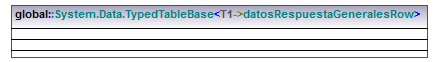
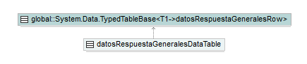

| diagrama |  |
| jerarquía |  |
| propietario | srGatewayPagos |
| plantilla | global::System.Data.TypedTableBase |
| sustituciónDeParámetroDePlantilla | |
| propiedades | | nivel de acceso | public | | leaf | false | | abstract | false | | isFinalSpecialization | false | | activo | false | | «struct» | false | | «delegate» | false | | «attributes» | false | | «internal» | false | | «new» | false | | «static» | false | | «unsafe» | false | | «partial» | false |
|
| específico | datosRespuestaGeneralesDataTable |